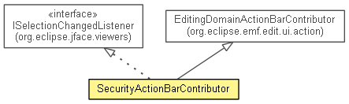

org.eclipse.emf.cdo.security.presentation
Class SecurityActionBarContributor
java.lang.Object
 org.eclipse.ui.part.EditorActionBarContributor
org.eclipse.ui.part.MultiPageEditorActionBarContributor
org.eclipse.emf.edit.ui.action.EditingDomainActionBarContributor
org.eclipse.emf.cdo.security.presentation.SecurityActionBarContributor
org.eclipse.ui.part.EditorActionBarContributor
org.eclipse.ui.part.MultiPageEditorActionBarContributor
org.eclipse.emf.edit.ui.action.EditingDomainActionBarContributor
org.eclipse.emf.cdo.security.presentation.SecurityActionBarContributor
- All Implemented Interfaces:
- org.eclipse.jface.action.IMenuListener, org.eclipse.jface.viewers.ISelectionChangedListener, org.eclipse.ui.IEditorActionBarContributor, org.eclipse.ui.IPropertyListener
- public class SecurityActionBarContributor
- extends EditingDomainActionBarContributor
- implements org.eclipse.jface.viewers.ISelectionChangedListener

This is the action bar contributor for the Security model editor.
- Generated
|
Field Summary |
protected org.eclipse.ui.IEditorPart |
activeEditorPart
This keeps track of the active editor |
protected Collection<org.eclipse.jface.action.IAction> |
createChildActions
This will contain one CreateChildAction corresponding to each descriptor
generated for the current selection by the item provider |
protected org.eclipse.jface.action.IMenuManager |
createChildMenuManager
This is the menu manager into which menu contribution items should be added for CreateChild actions |
protected Collection<org.eclipse.jface.action.IAction> |
createSiblingActions
This will contain one CreateSiblingAction corresponding to each descriptor
generated for the current selection by the item provider |
protected org.eclipse.jface.action.IMenuManager |
createSiblingMenuManager
This is the menu manager into which menu contribution items should be added for CreateSibling actions |
protected org.eclipse.jface.action.IAction |
refreshViewerAction
This action refreshes the viewer of the current editor if the editor
implements IViewerProvider |
protected org.eclipse.jface.viewers.ISelectionProvider |
selectionProvider
This keeps track of the current selection provider |
protected org.eclipse.jface.action.IAction |
showPropertiesViewAction
This action opens the Properties view |
| Fields inherited from class org.eclipse.emf.edit.ui.action.EditingDomainActionBarContributor |
activeEditor, ADDITIONS_LAST_STYLE, controlAction, copyAction, cutAction, deleteAction, loadResourceAction, pasteAction, redoAction, style, undoAction, validateAction |
|
Method Summary |
protected void |
addGlobalActions(org.eclipse.jface.action.IMenuManager menuManager)
This inserts global actions before the "additions-end" separator |
void |
contributeToMenu(org.eclipse.jface.action.IMenuManager menuManager)
This adds to the menu bar a menu and some separators for editor additions,
as well as the sub-menus for object creation items |
void |
contributeToToolBar(org.eclipse.jface.action.IToolBarManager toolBarManager)
This adds Separators for editor additions to the tool bar |
protected void |
depopulateManager(org.eclipse.jface.action.IContributionManager manager,
Collection<? extends org.eclipse.jface.action.IAction> actions)
This removes from the specified manager all ActionContributionItems
based on the IActions contained in the actions collection |
protected Collection<org.eclipse.jface.action.IAction> |
generateCreateChildActions(Collection<?> descriptors,
org.eclipse.jface.viewers.ISelection selection)
This generates a CreateChildAction for each object in descriptors,
and returns the collection of these actions |
protected Collection<org.eclipse.jface.action.IAction> |
generateCreateSiblingActions(Collection<?> descriptors,
org.eclipse.jface.viewers.ISelection selection)
This generates a CreateSiblingAction for each object in descriptors,
and returns the collection of these actions |
void |
menuAboutToShow(org.eclipse.jface.action.IMenuManager menuManager)
This populates the pop-up menu before it appears |
protected void |
populateManager(org.eclipse.jface.action.IContributionManager manager,
Collection<? extends org.eclipse.jface.action.IAction> actions,
String contributionID)
This populates the specified manager with ActionContributionItems
based on the IActions contained in the actions collection,
by inserting them before the specified contribution item contributionID. |
protected boolean |
removeAllReferencesOnDelete()
This ensures that a delete action will clean up all references to deleted objects |
void |
selectionChanged(org.eclipse.jface.viewers.SelectionChangedEvent event)
This implements ISelectionChangedListener,
handling SelectionChangedEvents by querying for the children and siblings
that can be added to the selected object and updating the menus accordingly |
void |
setActiveEditor(org.eclipse.ui.IEditorPart part)
When the active editor changes, this remembers the change and registers with it as a selection provider |
| Methods inherited from class org.eclipse.emf.edit.ui.action.EditingDomainActionBarContributor |
activate, contributeToStatusLine, createCopyAction, createCutAction, createDeleteAction, createPasteAction, createRedoAction, createUndoAction, deactivate, getActiveEditor, init, propertyChanged, setActivePage, setActiveView, shareGlobalActions, update |
| Methods inherited from class org.eclipse.ui.part.EditorActionBarContributor |
contributeToCoolBar, dispose, getActionBars, getPage, init |
| Methods inherited from class java.lang.Object |
clone, equals, finalize, getClass, hashCode, notify, notifyAll, toString, wait, wait, wait |
activeEditorPart
protected org.eclipse.ui.IEditorPart activeEditorPart
- This keeps track of the active editor.
- Generated
selectionProvider
protected org.eclipse.jface.viewers.ISelectionProvider selectionProvider
- This keeps track of the current selection provider.
- Generated
showPropertiesViewAction
protected org.eclipse.jface.action.IAction showPropertiesViewAction
- This action opens the Properties view.
- Generated
refreshViewerAction
protected org.eclipse.jface.action.IAction refreshViewerAction
- This action refreshes the viewer of the current editor if the editor
implements
IViewerProvider.
- Generated
createChildActions
protected Collection<org.eclipse.jface.action.IAction> createChildActions
- This will contain one
CreateChildAction corresponding to each descriptor
generated for the current selection by the item provider.
- Generated
createChildMenuManager
protected org.eclipse.jface.action.IMenuManager createChildMenuManager
- This is the menu manager into which menu contribution items should be added for CreateChild actions.
- Generated
createSiblingActions
protected Collection<org.eclipse.jface.action.IAction> createSiblingActions
- This will contain one
CreateSiblingAction corresponding to each descriptor
generated for the current selection by the item provider.
- Generated
createSiblingMenuManager
protected org.eclipse.jface.action.IMenuManager createSiblingMenuManager
- This is the menu manager into which menu contribution items should be added for CreateSibling actions.
- Generated
SecurityActionBarContributor
public SecurityActionBarContributor()
- This creates an instance of the contributor.
- Generated
contributeToToolBar
public void contributeToToolBar(org.eclipse.jface.action.IToolBarManager toolBarManager)
- This adds Separators for editor additions to the tool bar.
- Overrides:
contributeToToolBar in class EditingDomainActionBarContributor
- Generated
contributeToMenu
public void contributeToMenu(org.eclipse.jface.action.IMenuManager menuManager)
- This adds to the menu bar a menu and some separators for editor additions,
as well as the sub-menus for object creation items.
- Overrides:
contributeToMenu in class EditingDomainActionBarContributor
- Generated
setActiveEditor
public void setActiveEditor(org.eclipse.ui.IEditorPart part)
- When the active editor changes, this remembers the change and registers with it as a selection provider.
- Specified by:
setActiveEditor in interface org.eclipse.ui.IEditorActionBarContributor- Overrides:
setActiveEditor in class EditingDomainActionBarContributor
- Generated
selectionChanged
public void selectionChanged(org.eclipse.jface.viewers.SelectionChangedEvent event)
- This implements
ISelectionChangedListener,
handling SelectionChangedEvents by querying for the children and siblings
that can be added to the selected object and updating the menus accordingly.
- Specified by:
selectionChanged in interface org.eclipse.jface.viewers.ISelectionChangedListener
- Generated
generateCreateChildActions
protected Collection<org.eclipse.jface.action.IAction> generateCreateChildActions(Collection<?> descriptors,
org.eclipse.jface.viewers.ISelection selection)
- This generates a
CreateChildAction for each object in descriptors,
and returns the collection of these actions.
- Generated
generateCreateSiblingActions
protected Collection<org.eclipse.jface.action.IAction> generateCreateSiblingActions(Collection<?> descriptors,
org.eclipse.jface.viewers.ISelection selection)
- This generates a
CreateSiblingAction for each object in descriptors,
and returns the collection of these actions.
- Generated
populateManager
protected void populateManager(org.eclipse.jface.action.IContributionManager manager,
Collection<? extends org.eclipse.jface.action.IAction> actions,
String contributionID)
- This populates the specified
manager with ActionContributionItems
based on the IActions contained in the actions collection,
by inserting them before the specified contribution item contributionID.
If contributionID is null, they are simply added.
- Generated
depopulateManager
protected void depopulateManager(org.eclipse.jface.action.IContributionManager manager,
Collection<? extends org.eclipse.jface.action.IAction> actions)
- This removes from the specified
manager all ActionContributionItems
based on the IActions contained in the actions collection.
- Generated
menuAboutToShow
public void menuAboutToShow(org.eclipse.jface.action.IMenuManager menuManager)
- This populates the pop-up menu before it appears.
- Specified by:
menuAboutToShow in interface org.eclipse.jface.action.IMenuListener- Overrides:
menuAboutToShow in class EditingDomainActionBarContributor
- Generated
addGlobalActions
protected void addGlobalActions(org.eclipse.jface.action.IMenuManager menuManager)
- This inserts global actions before the "additions-end" separator.
- Overrides:
addGlobalActions in class EditingDomainActionBarContributor
- Generated
removeAllReferencesOnDelete
protected boolean removeAllReferencesOnDelete()
- This ensures that a delete action will clean up all references to deleted objects.
- Overrides:
removeAllReferencesOnDelete in class EditingDomainActionBarContributor
- Generated
Copyright (c) 2004 - 2012 Eike Stepper (Berlin, Germany) and others.